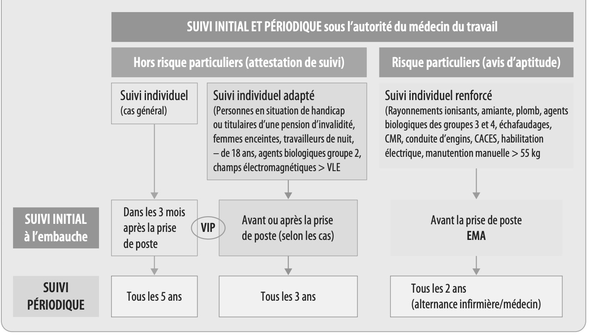
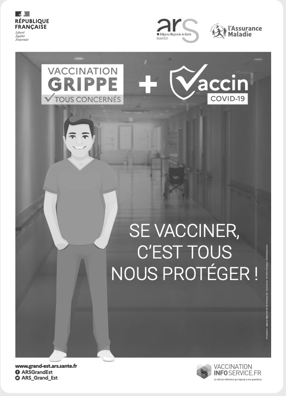

Amel, 20 ans, vient d'être embauchée comme agent de service hospitalier et a été affectée au service de médecine interne de la clinique qui accueille des patients atteints de maladies diverses. Elle vient de recevoir une convocation des services prévention et de santé au travail (SPST) pour une visite médicale. Elle ne comprend pas l'intérêt de cette visite d'information et de prévention (VIP) d'autant plus qu'elle se fera deux semaines après sa prise de poste et qu'elle est en excellente santé. Elle doit apporter son carnet de santé et le questionnaire de santé complété avec le point sur ses vaccins. Sa responsable lui précise qu'il est important de s'assurer que sa santé lui permette d'occuper ce poste et qu'elle ne risque pas de contaminer les patients. D'autres enjeux lui seront également précisés par le SPST.
source Delagrave
2. S'assurer qu'elle ne risque pas de contaminer les patients.
Dans un but de protection de sa santé, tout salarié (apprenti y compris) bénéficie d'un suivi individuel médical par le SPST. Ce suivi diffère selon sa vulnérabilité et les risques du poste occupé ; il est selon les cas, simple (cas général), adapté ou renforcé.
À l'embauche, hors risques particuliers, le salarié bénéficie d'une visite d'information et de prévention (VIP) au cours de laquelle il est informé sur les risques auxquels il est exposé et sur les mesures de prévention à mettre en œuvre ; l'aptitude au travail est plus particulièrement vérifiée lors de l'examen médical d'aptitude (EMA) pour les postes à risques particuliers.
Tous les 2 à 5 ans sont effectuées des visites périodiques.

source Delagrave
→ Soulignez directement dans le DOC. 1. Puis cliquez sur « Intérêt suivant » pour les voir apparaître un par un dans le texte.
- « protection de sa santé »
- « diffère selon sa vulnérabilité et les risques du poste occupé »
- « informé sur les risques auxquels il est exposé »
- « mesures de prévention à mettre en œuvre »
| Situation | Visite à l'embauche | Nature du suivi | Justification |
|---|---|---|---|
| A. Prothésiste dentaire en situation de handicap | |||
| B. Peintre façadier (travaille sur échafaudages) | |||
| C. Vendeur de 19 ans venant d'être embauché |
Suivi simple = cas général · adapté = handicap, femmes enceintes, travailleurs de nuit, <18 ans · renforcé = postes très dangereux.
Justification : Travailleur en situation de handicap → suivi individuel adapté (vulnérabilité du salarié, pas de risque particulier lié au poste).
Justification : Travaux sur échafaudages = risques particuliers → EMA avant la prise de poste + suivi individuel renforcé.
Justification : Aucun risque particulier lié au poste, aucune vulnérabilité spécifique → suivi individuel simple (cas général).
Le Code de la santé publique rend obligatoires certaines vaccinations pour des personnels exposés au risque microbiologique ou exposant à celui-ci les personnes dont ils ont la charge. Le ministère de la Santé publie chaque année les recommandations vaccinales pour chaque secteur professionnel.
4.4.1 Tableau 2023 des vaccinations en milieu professionnel (Hors Covid-19) – extrait
| SANTÉ | DTP* | Coqueluche | Grippe | Hépatite A | Hépatite B | Leptospirose | Rage | ROR | Varicelle | FJ | IIM |
|---|---|---|---|---|---|---|---|---|---|---|---|
| Étudiants des professions médicales, paramédicales ou pharmaceutiques / assistant dentaire | Obl | Rec | Rec | Obl | |||||||
| Professionnels des établissements ou organismes de prévention et/ou de soins (arrêté du 15 mars 1991) dont les services communaux d'hygiène et les transports sanitaires | Obl | Rec | Rec | Obl (si exposés) | Rec y compris si nés avant 1980, sans ATCD | Rec sans ATCD, séronégatif |
* DTP : diphtérie, tétanos, poliomyélite – ROR : rougeole, oreillons, rubéole – ATCD : antécédents – Obl = obligatoire – REC = recommandé
source Delagrave

© ARS Grand Est
→ Sur votre document papier, puis cliquez pour afficher le corrigé dans le tableau du DOC. 2.
■ Recommandés (vert) : Coqueluche, Grippe, ROR (avec conditions), Varicelle (sans ATCD, séronégatif)
Public ciblé : les professionnels de la santé.
Collective (immunité de groupe) : si une grande partie de la population est immunisée, le microbe ne peut plus circuler → les personnes non-vaccinées (nourrissons, immunodéprimés) sont aussi protégées indirectement.
Voici les vaccins du tableau DOC. 2 : la maladie contre laquelle ils protègent, comment elle se transmet et pourquoi elle est dangereuse en milieu professionnel.
| Vaccin | Statut | Maladie(s) prévenue(s) | Mode de transmission | Risques / Pourquoi se vacciner ? |
|---|---|---|---|---|
| DTP Diphtérie Tétanos Poliomyélite |
OBLIGATOIRE |
Diphtérie : infection bactérienne grave de la gorge. Tétanos : contractures musculaires pouvant causer la mort. Poliomyélite : paralysies irréversibles des membres. |
Diphtérie : gouttelettes (toux, éternuements). Tétanos : plaie, blessure (bactérie présente dans la terre). Poliomyélite : voie oro-fécale (eau ou aliments contaminés). |
La diphtérie peut être mortelle dans 10 % des cas. Le tétanos tue 1 personne sur 3 sans réanimation. La polio peut paralyser à vie. En milieu professionnel de santé, tout contact avec des patients ou des plaies peut exposer à ces agents. |
| Coqueluche | RECOMMANDÉ | Infection bactérienne respiratoire provoquant de violentes quintes de toux. | Gouttelettes respiratoires — extrêmement contagieuse (1 malade contamine en moyenne 15 personnes). | Très dangereuse pour les nourrissons de moins de 6 mois (risque de mort par asphyxie). Un soignant non vacciné peut transmettre la maladie à des bébés hospitalisés. |
| Grippe | RECOMMANDÉ | Infection virale respiratoire saisonnière : fièvre élevée, fatigue intense, douleurs musculaires. | Gouttelettes respiratoires, contact direct avec une personne infectée. | Grave chez les personnes fragilisées (personnes âgées, immunodéprimées). Les soignants non vaccinés peuvent être vecteurs de la grippe vers des patients vulnérables hospitalisés. |
| Hépatite A | RECOMMANDÉ | Infection virale du foie : fièvre, fatigue intense, jaunisse (ictère), douleurs abdominales. | Voie oro-fécale : eaux usées, aliments ou mains contaminés par les selles d'une personne infectée. | Recommandée pour les professionnels en contact avec les eaux usées, la restauration collective, et les services de pédiatrie. Peut évoluer vers une insuffisance hépatique grave. |
| Hépatite B | OBLIGATOIRE | Infection virale du foie pouvant évoluer en cirrhose ou en cancer du foie. | Contact avec le sang ou les sécrétions d'une personne infectée (piqûre accidentelle, projections…). | Risque majeur pour les soignants (piqûres accidentelles avec aiguilles). Après une piqûre exposante, le risque de transmission est de 6 à 30 %. Vaccination obligatoire pour tous les professionnels de santé. |
| Leptospirose | RECOMMANDÉ | Infection bactérienne grave : forte fièvre, douleurs musculaires, atteintes du foie et des reins. | Contact avec des eaux ou des sols souillés par les urines de rongeurs infectés (rats principalement). | Recommandée pour les égoutiers, gardes-pêche, travailleurs en milieu humide ou en contact avec des animaux. Peut provoquer une insuffisance rénale sévère. |
| Rage | RECOMMANDÉ | Infection virale du système nerveux central : encéphalite mortelle une fois les symptômes déclarés. | Morsure ou griffure d'un animal infecté (chien, chauve-souris, renard…). | Recommandée pour les vétérinaires, forestiers, agents de fourrière, et tout professionnel exposé aux animaux sauvages ou domestiques. La rage est quasiment toujours mortelle sans traitement préventif. |
| ROR Rougeole Oreillons Rubéole |
RECOMMANDÉ |
Rougeole : éruption cutanée, fièvre élevée, complications neurologiques graves. Oreillons : gonflement des glandes salivaires, méningite possible. Rubéole : éruption cutanée, dangereuse pour le fœtus si contractée pendant la grossesse. |
Voie respiratoire (gouttelettes). La rougeole est l'une des maladies les plus contagieuses connues. | Recommandé pour les soignants nés avant 1980 sans antécédents (ATCD). La rubéole est particulièrement dangereuse pour les femmes enceintes soignantes : elle peut provoquer de graves malformations fœtales. |
| Varicelle | RECOMMANDÉ | Infection virale caractérisée par une éruption de vésicules sur tout le corps, accompagnée de fièvre et de démangeaisons intenses. | Voie respiratoire et contact direct avec les vésicules. Très contagieuse. | Recommandée pour les soignants séronégatifs (sans ATCD de varicelle). Peut être grave chez les adultes immunodéprimés et les femmes enceintes. En milieu pédiatrique ou oncologique, un soignant non immunisé représente un risque sérieux pour les patients. |
Sources : Vaccination Info Service (professionnels.vaccination-info-service.fr), Calendrier vaccinal 2025 (Ministère de la Santé), Officiel Prévention, INRS.
✗ Supprimer tous les risques professionnels — faux : la vaccination ne concerne que les risques microbiologiques.
2. Protection collective — les patients et collègues sont protégés contre la contagion.
| 0–2 / 6 | Revoir l'ensemble de la séance 1 : le suivi médical des salariés et les vaccinations en milieu professionnel. |
| 3–4 / 6 | Revoir la distinction VIP / EMA et les modalités de la vaccination professionnelle. |
| 5–6 / 6 | Les notions essentielles de la séance 1 sont acquises. |